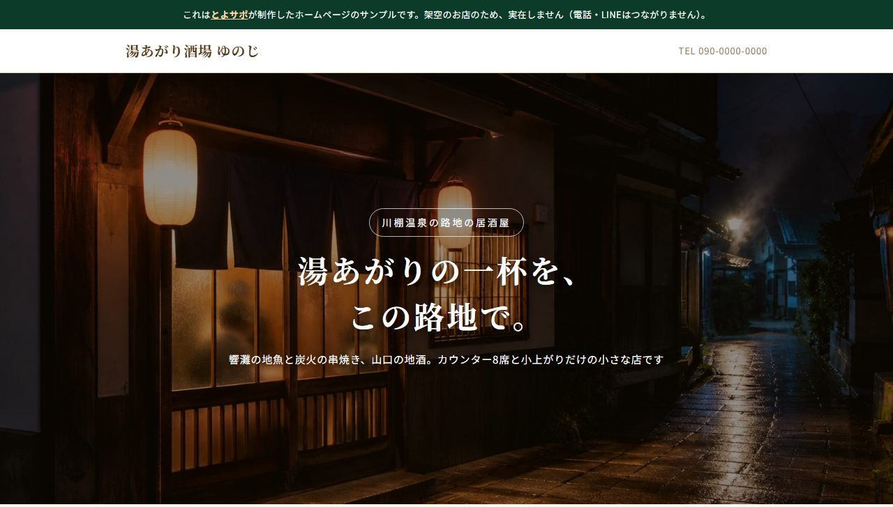
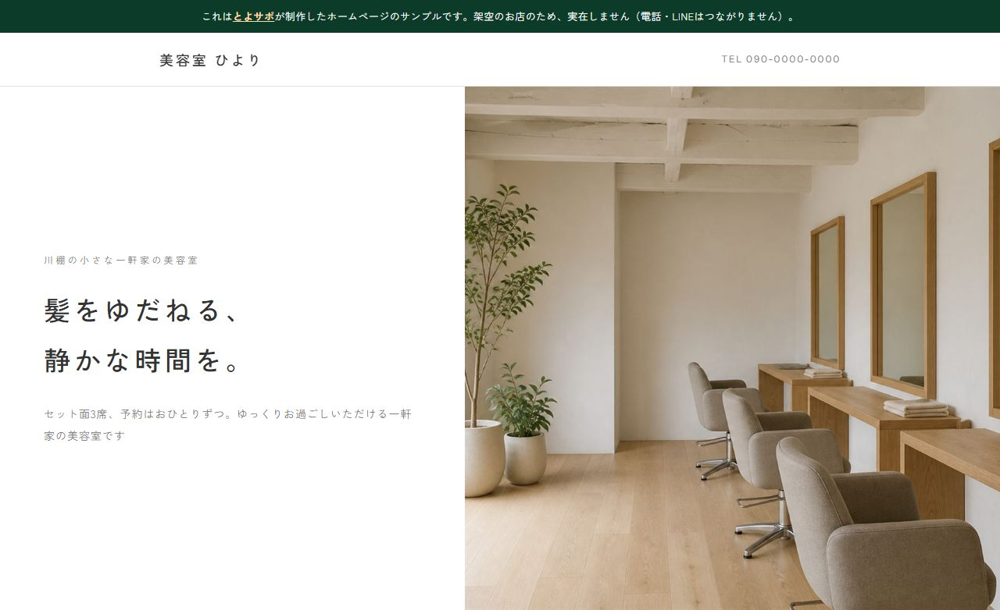
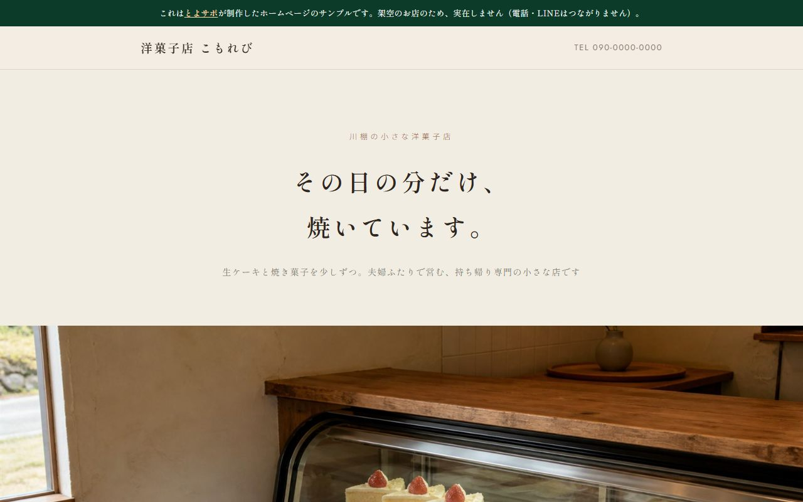
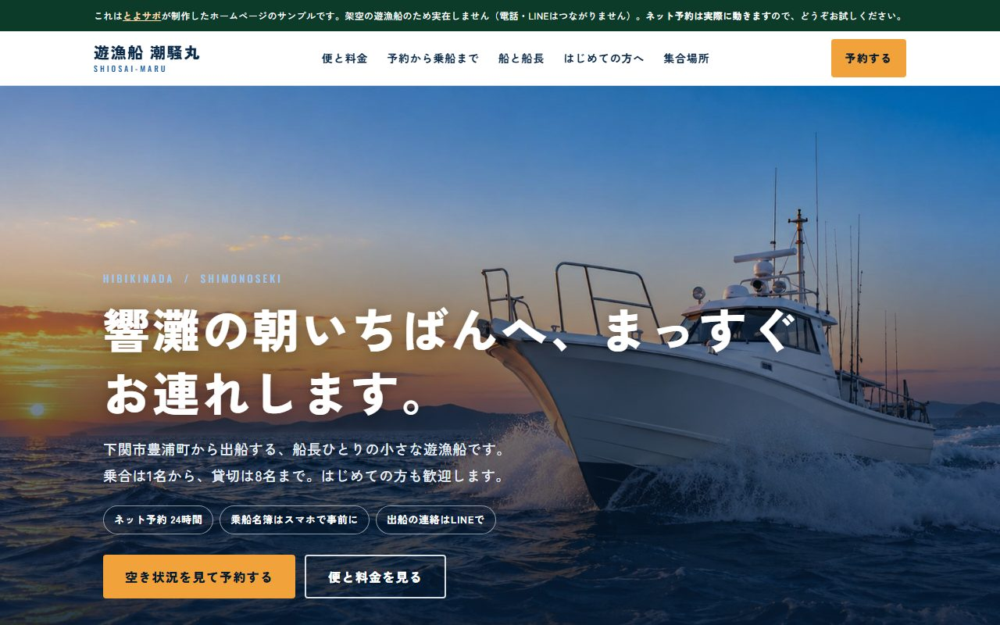

SAMPLE
ホームページの見本
「うちのお店だと、どんなホームページになるの？」
その答えになる見本を、業種ごとにご用意しました。

サンプル（架空のお店）飲食店・居酒屋
湯あがり酒場 ゆのじ
川棚温泉の路地の居酒屋（架空）
「うちの店だと、どんな感じになるの？」にお答えするために作ったサンプルです。川棚温泉にありそうな小さな居酒屋を想定して、写真・お品書き・店舗情報まで一通り入れています。実在するお店ではありません。
- 1ページですべてが分かる構成（おまかせプランの形）
- スマホでは画面下に電話・LINEのボタンが常に表示
- お品書きは価格つき。仕入れで変わる旨も明記
- 営業時間・定休日・駐車場・地図を1か所にまとめて掲載
- 写真はすべて自前で用意（他店の写真は使いません）

サンプル（架空のお店）美容室・サロン
美容室 ひより
川棚の小さな一軒家の美容室（架空）
同じ制作者でも、業種が違えば見た目はまったく変わります。居酒屋とは真逆の、白と自然光を基調とした静かなつくりにしました。落ち着いた雰囲気を出したいお店向けの形です。実在するお店ではありません。
- ネット予約つき。実際に予約でき、店主用の管理画面もご覧いただけます（月額オプション）
- 写真を大きく使った、余白の多い落ち着いたデザイン
- メニューは料金つきの一覧。「〜円から」の表記にも対応
- ご予約は電話とLINEの2つだけに絞った導線
- 営業時間・定休日・駐車場・地図を1か所にまとめて掲載
- 写真はすべて自前で用意（他店の写真は使いません）

サンプル（架空のお店）洋菓子店・テイクアウト
洋菓子店 こもれび
川棚の小さな洋菓子店（架空）
紙のようなクリーム色の地に明朝体を置いた、落ち着いた印象のつくりです。持ち帰り専門のお店を想定し、商品と値段、贈り物の相談先が一目で分かる並びにしました。実在するお店ではありません。
- 商品と値段を一覧で掲載。「〜円から」の表記にも対応
- 「その日の分だけ」など、お店の考え方を伝える欄つき
- ホールケーキの予約・のし対応の案内を明記
- 営業時間・定休日・駐車場・地図を1か所にまとめて掲載
- 写真はすべて自前で用意（他店の写真は使いません）

サンプル（架空の船）遊漁船・釣り船
遊漁船 潮騒丸
響灘で出船する船長ひとりの釣り船（架空）
紺と白で、海の力強さを前に出したつくりです。電話がつながらない、中止かどうか分からない、港で名簿を書く。釣り船の「ちょっと面倒」を、ネット予約とLINEで片づける形にしました。実在する船ではありません。
- 便ごとのネット予約つき。残りの席数が見え、貸切も受けられます（月額オプション）
- 乗船名簿を全員分スマホで事前入力。同行の方には届いたURLから各自で
- お客様が前日まで自分で変更・キャンセルできる確認ページ
- 前日のご案内と出船確定・中止をLINEで一斉連絡（お店のLINE公式アカウントと連携）
- 船長側の画面で名簿の印刷・CSV保存。実際に触れます
- 写真はすべて自前で用意（他店の写真は使いません）